Huamanguilla
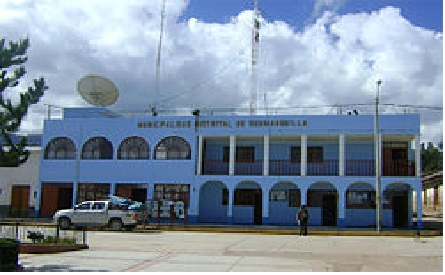
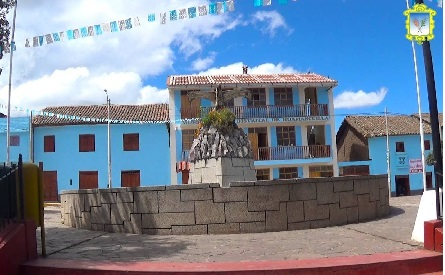
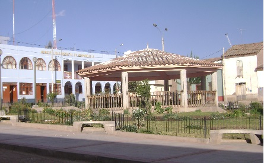
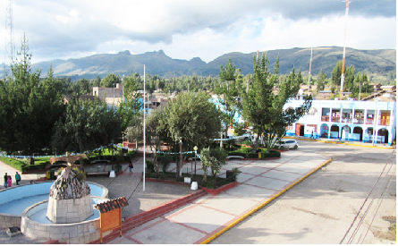
PUEBLO DE HUAMANGUIllA
El distrito de Huamanguilla, es uno de los ocho distritos de la provincia de Huanta ubicada en el departamento de Ayacucho en el Perú, está ubicada a 3 276 msnm. Su capital es el centro poblado de Huamanguilla se caracteriza por un clima templado y seco, con una marcada diferencia de la estación húmeda – lluviosa y la estación seca. La estación húmeda se presenta de diciembre a marzo, aunque las lluvias aparecen con menor intensidad desde setiembre y desaparecen en abril. La estación seca se produce en los meses de mayo a agosto durante los cuales también se produce una mayor insolación. El distrito presenta un clima variado, característico de una zona de montaña, determinado por la variación altitudinal y por la heterogeneidad de la topografía; la característica principal de su clima es la disminución de la temperatura con la altitud, la intensa radiación solar y la dificultad para conservar el calor por la baja humedad atmosférica que determina a su vez los cambios drásticos de temperatura entre el día y la noche.
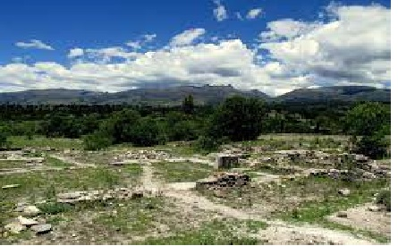
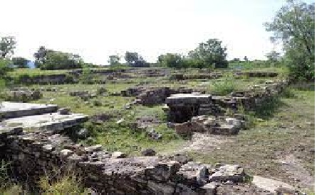
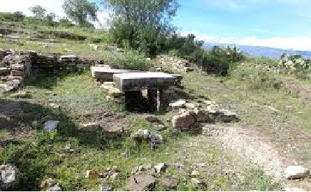


SITIO ARQUIOLOGICO DE MARAYNIYOQ
Se ubica en el poblado La Vega, distrito de Huamanguilla de la provincia de Huanta, región de Ayacucho. Con coordenadas geográficas 18 L 586365.00 m E, 8559652.00 m S. Marayniyoq se encuentra a 4.14 km. del complejo arqueológico Wari. Sobre una planicie denominada pampa de la Vega (Valdez 2002). Cronológicamente, la ocupación de Marayniyoq se inicia alrededor de los 700 DC y continua hasta los 1000 DC. La presencia de cerámica tipo Chakipampa B (HM1B), Viñaque (HM2A) y Huamanga (HM2) validan que el sitio fue de mayor importancia durante estas épocas
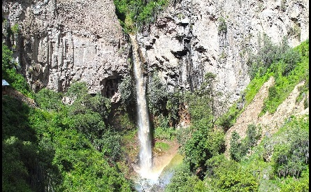

 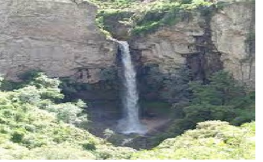
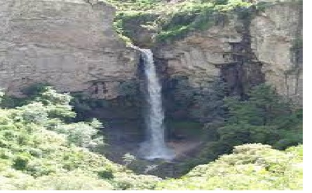

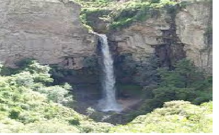
CATARATA DE PACCHA SIRENACHAYOQ
Está ubicado en el centro poblado de Piticha, escondida entre un cañón con acceso a caminata a 20 minutos desde el centro poblado A espaldas de la comunidad se encuentra la catarata de Sirenachayoc, escondida entre un cañón, se cuenta que en este lugar viven las sirenas y es precisamente el nombre que en quechua hace alusión a este creencia. Para llegar a este lugar se realiza una caminata de 20 minutos aproximadamente, el camino estrecho nos lleva por el borde del cerro permitiendo apreciar la flora y fauna del cual destacan los loros. La caída del agua y su singular geografía permite que las personas se ubiquen detrás de la catarata, la fuerza de la caída produce una especie de lluvia a su alrededor y estando más cerca se siente como las gotas se esparcen con intensidad de abajo hacia arriba.